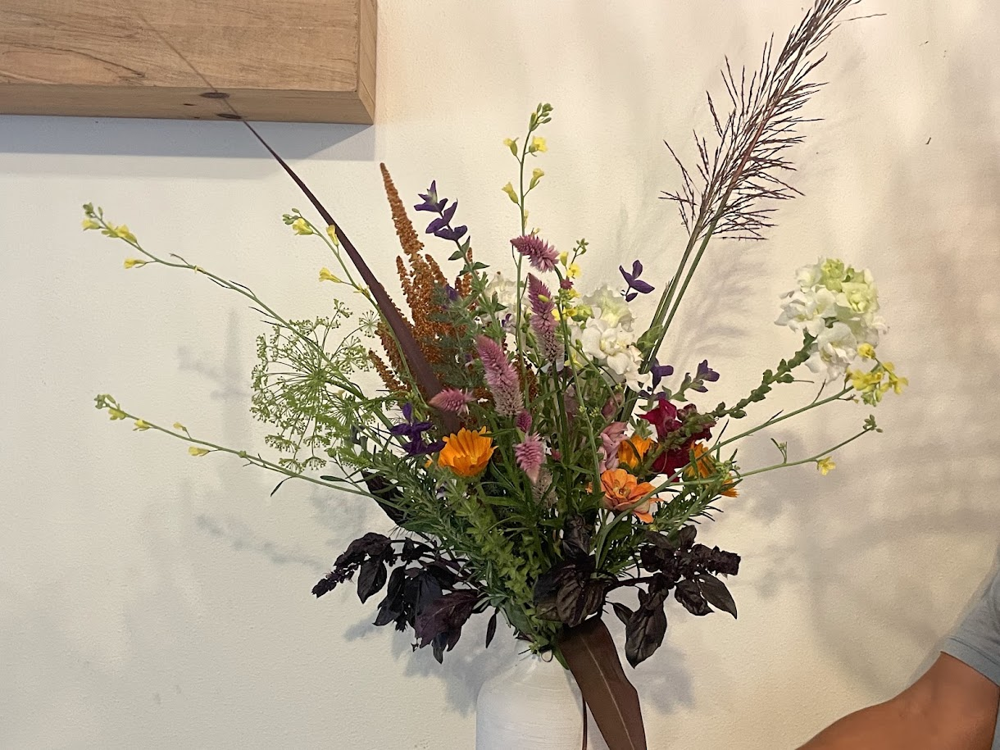
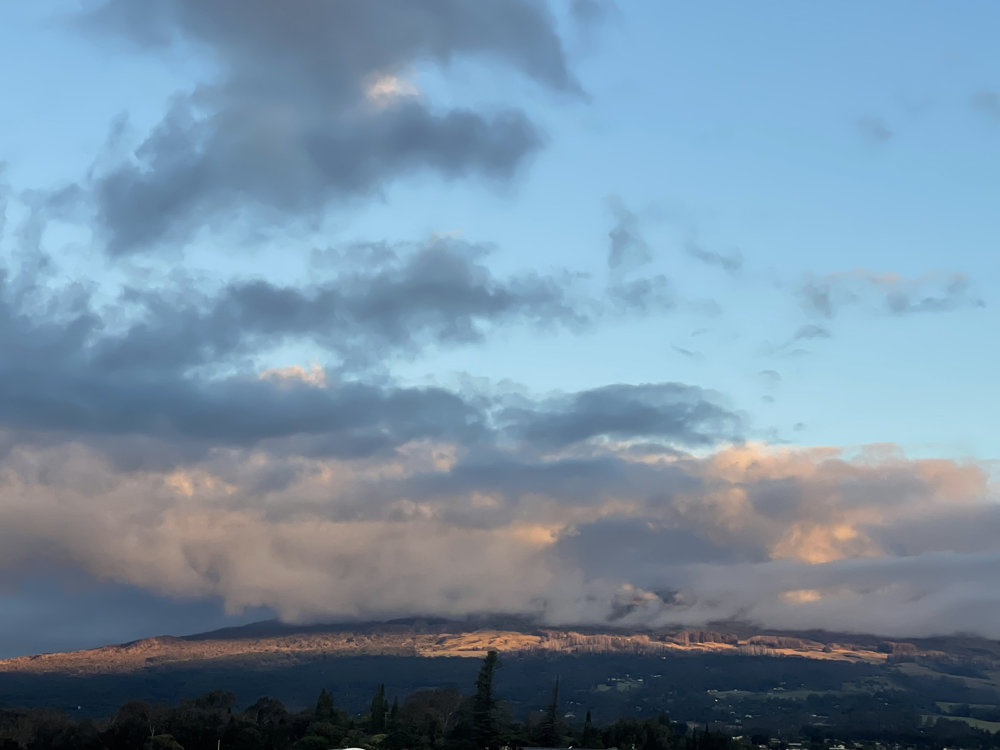
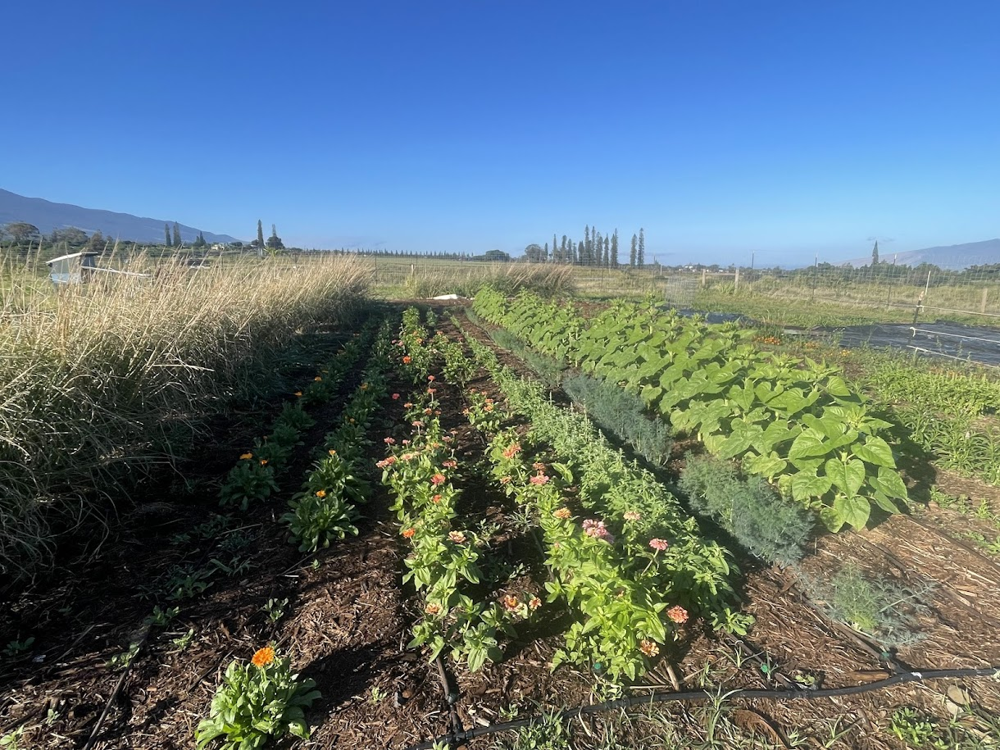
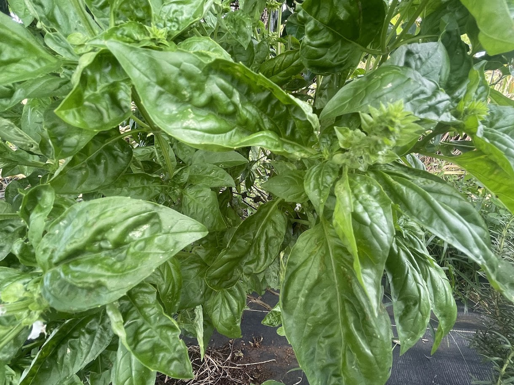
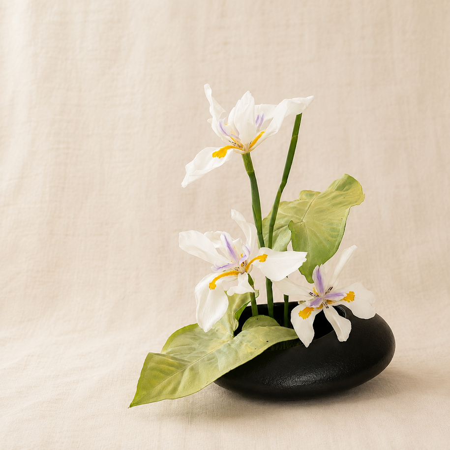
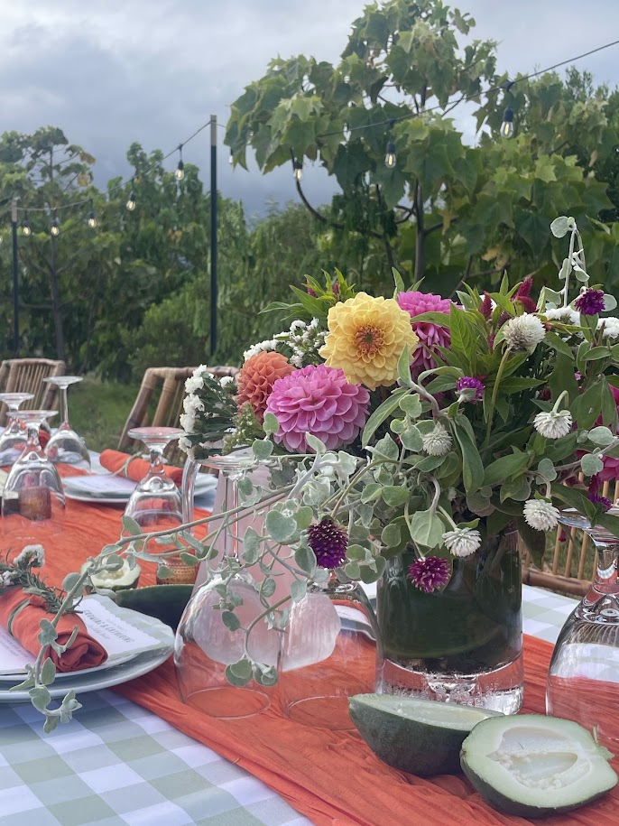

Cut Flowers
Seasonal bouquets and specialty flowers grown right here on the farm.

Nestled on the slopes of Haleakalā in Makawao, Kūʻono Farm is a small regenerative farm growing specialty flowers, tropical fruit, culinary herbs, and creating meaningful connections with the land.
Whether you're looking for fresh flowers, beautiful floral arrangements, workshops, or simply a place to experience Maui's agricultural community, we're happy you're here.


Seasonal bouquets and specialty flowers grown right here on the farm.

A seasonal harvest of tropical fruit grown using regenerative farming practices.

Culinary herbs grown fresh for local chefs, home cooks, and flower lovers alike.

From custom arrangements to artistic tablescapes, we create floral designs for weddings, businesses, special events, and meaningful gifts.

Kūʻono Farm offers a peaceful setting for farm dinners, workshops, small celebrations, and opportunities to reconnect with agriculture.